⚡ 初中物理常考模型
力学·电学·热学·光学·电磁·实验模型·中考全覆盖
一、力学模型
🔹 受力分析模型

画力顺序："一重二弹三摩擦"
1. 重力 竖直向下，作用在重心（G=mg） 2. 弹力 支持力（垂直于接触面）、拉力（沿绳方向） 3. 摩擦力 与相对运动方向相反（注意有无摩擦力）
平衡状态：静止或匀速直线运动 → F合 = 0
常考场景： 水平面 G向下、N向上、F向右、f向左 斜面 G向下、N垂直斜面、f沿斜面向上/下 悬吊 G向下、绳拉力向上
1. 重力 竖直向下，作用在重心（G=mg） 2. 弹力 支持力（垂直于接触面）、拉力（沿绳方向） 3. 摩擦力 与相对运动方向相反（注意有无摩擦力）
平衡状态：静止或匀速直线运动 → F合 = 0
常考场景： 水平面 G向下、N向上、F向右、f向左 斜面 G向下、N垂直斜面、f沿斜面向上/下 悬吊 G向下、绳拉力向上
G = mg | 二力平衡：F合 = 0 | 相互作用力：F = -F'
🔹 牛顿第二定律（F=ma）
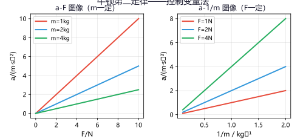
牛顿第二定律：物体加速度的大小与所受合外力成正比，与质量成反比。
F合 = ma 加速度方向与合外力方向相同
解题步骤：①受力分析 ②求合力 ③由F=ma求加速度 ④由运动学公式求速度/位移
超重与失重： 超重 加速度向上（加速上升/减速下降）→ N > G 失重 加速度向下（减速上升/加速下降）→ N < G 完全失重 a=g → N=0
F合 = ma 加速度方向与合外力方向相同
解题步骤：①受力分析 ②求合力 ③由F=ma求加速度 ④由运动学公式求速度/位移
超重与失重： 超重 加速度向上（加速上升/减速下降）→ N > G 失重 加速度向下（减速上升/加速下降）→ N < G 完全失重 a=g → N=0
例题 1：静止在水平桌面上的书本，受到哪些力？画出受力示意图。
分析：①重力G（竖直向下）②支持力N（竖直向上）— 二力平衡，G=N
分析：①重力G（竖直向下）②支持力N（竖直向上）— 二力平衡，G=N
重力 G = mg 竖直向下，支持力 N = G 竖直向上，二力平衡。注意：书本不受"压力"（压力是书本对桌面的力）。
练习 1：在斜面上静止的物体，画出它的受力示意图。
受到三个力：①重力G（竖直向下）②支持力N（垂直于斜面向上）③静摩擦力f（沿斜面向上，防止下滑）
🔹 运动学模型

s-t图像：水平线→静止；斜向上直线→匀速直线（斜率=速度）
v-t图像：水平线→匀速；斜向上→加速；斜向下→减速
v-t图像面积 = 路程 斜率 = 加速度
匀变速直线运动公式：
v = v₀ + at | s = v₀t + ½at² | v² − v₀² = 2as
平均速度：v = s总/t总（中途停止时间要算入总时间）
惯性：只与质量有关，与速度无关。质量越大惯性越大
v-t图像：水平线→匀速；斜向上→加速；斜向下→减速
v-t图像面积 = 路程 斜率 = 加速度
匀变速直线运动公式：
v = v₀ + at | s = v₀t + ½at² | v² − v₀² = 2as
平均速度：v = s总/t总（中途停止时间要算入总时间）
惯性：只与质量有关，与速度无关。质量越大惯性越大
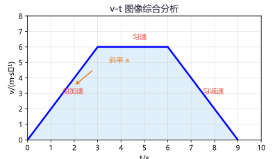
v = v₀ + at | s = v₀t + ½at² | v² − v₀² = 2as
例题 2：汽车以 10m/s 的速度行驶，刹车加速度大小为 2m/s²，求刹车后 3s 和 6s 的位移。
解：停车时间 t=v₀/a=10/2=5s，故 6s 时已停车。
t=3s: s=10×3−½×2×9=30−9=21m
t=6s: 即 t=5s 位移 s=10×5−½×2×25=50−25=25m
解：停车时间 t=v₀/a=10/2=5s，故 6s 时已停车。
t=3s: s=10×3−½×2×9=30−9=21m
t=6s: 即 t=5s 位移 s=10×5−½×2×25=50−25=25m
注意判断实际停车时间！6s 时车已经停了，不能直接用 t=6s 代入公式计算。
练习 2：物体从静止开始以 3m/s² 加速 4s，求末速度和 4s 内位移。
v=at=3×4=12m/s；s=½at²=½×3×16=24m
🔹 压强模型

固体压强：p = F/S。F=G（水平面），S取接触面积。
柱体对水平面：p = ρgh（与底面积无关，只与密度和高度有关）
液体压强：p = ρgh。深度 h 从自由液面竖直向下算。
特点：同一液体同一深度各处压强相等
大气压强：p₀ = 1.013×10⁵ Pa（托里拆利实验测出）
海拔越高气压越低 沸点随气压降低而降低 高压锅原理：限压阀→提高锅内气压→提高沸点
柱体对水平面：p = ρgh（与底面积无关，只与密度和高度有关）
液体压强：p = ρgh。深度 h 从自由液面竖直向下算。
特点：同一液体同一深度各处压强相等
大气压强：p₀ = 1.013×10⁵ Pa（托里拆利实验测出）
海拔越高气压越低 沸点随气压降低而降低 高压锅原理：限压阀→提高锅内气压→提高沸点
固体 p = F/S | 柱体 p = ρgh | 液体 p = ρgh
例题 3：一个质量为 60kg 的人，每只脚与地面的接触面积为 200cm²。求他站立时对地面的压强。
解：F=G=mg=60×10=600N，S=200×2=400cm²=0.04m²
p=F/S=600/0.04=15000Pa
解：F=G=mg=60×10=600N，S=200×2=400cm²=0.04m²
p=F/S=600/0.04=15000Pa
注意：站立时两脚着地，受力面积是两只脚的总面积。行走时单脚着地，压强翻倍！
练习 3：水坝深 20m 处，水对坝底的压强是多少？（ρ水=1.0×10³kg/m³，g=10N/kg）
p=ρgh=1.0×10³×10×20=2×10⁵Pa
🔹 浮力模型

阿基米德原理：F浮 = G排 = ρ液gV排（与深度无关！）
浮沉条件：
密度计：漂浮→F浮=G→ρ液大V排小→刻度下大上小
船与潜艇：轮船漂浮→满载排水量m排=ρV排；潜艇改变自重实现浮沉
浮力四法：称重法F浮=G-F拉；阿基米德法F浮=ρ液gV排；平衡法F浮=G；压力差法F浮=F下-F上
浮沉条件：
| 状态 | 条件 | 特点 |
|---|---|---|
| 上浮 | F浮 > G | 最终漂浮（F浮=G） |
| 悬浮 | F浮 = G | 可在液体中任意深度 |
| 下沉 | F浮 < G | 沉底后F浮+N=G |
| 漂浮 | F浮 = G | V排 < V物 |
船与潜艇：轮船漂浮→满载排水量m排=ρV排；潜艇改变自重实现浮沉
浮力四法：称重法F浮=G-F拉；阿基米德法F浮=ρ液gV排；平衡法F浮=G；压力差法F浮=F下-F上
F浮 = ρ液gV排 | 轮船：空心法 | 潜水艇：改变自重
例题 4：一艘轮船从海里驶入河里，它受到的浮力____，船身____（上浮/下沉）一些？
解：漂浮时 F浮=G，重力不变→浮力不变。ρ海水>ρ河水，由F浮=ρ液gV排，ρ液↓→V排↑，船身下沉一些。
解：漂浮时 F浮=G，重力不变→浮力不变。ρ海水>ρ河水，由F浮=ρ液gV排，ρ液↓→V排↑，船身下沉一些。
浮力不变（始终等于船重），但河水密度小于海水，排开水的体积增大，船身下沉。
练习 4：一个质量为 0.6kg、体积为 1×10⁻³m³ 的木块，放入水中静止后的浮力是多少？（g=10N/kg）
ρ木=0.6/10⁻³=0.6×10³kg/m³<ρ水，所以漂浮。F浮=G=mg=0.6×10=6N
🔹 简单机械与能量模型

杠杆平衡：F₁L₁ = F₂L₂
省力杠杆(L₁>L₂) 撬棍、瓶起子、钳子
费力杠杆(L₁<L₂) 镊子、钓鱼竿、扫帚
滑轮组：F = G总/n，s = nh（n为承担重物绳子段数）
功：W=Fs | 功率：P=W/t=Fv
机械效率：η = W有/W总 × 100% η总小于1（额外功不可避免）
机械能守恒：动能+势能=常数（只有重力做功时）
滚摆：上升动能→重力势能，下降反之
滑轮组：F = G总/n，s = nh（n为承担重物绳子段数）
功：W=Fs | 功率：P=W/t=Fv
机械效率：η = W有/W总 × 100% η总小于1（额外功不可避免）
机械能守恒：动能+势能=常数（只有重力做功时）
滚摆：上升动能→重力势能，下降反之

F₁L₁ = F₂L₂ | F = G总/n | η = W有/W总 × 100%
例题 5：用一个动滑轮将重 200N 的物体匀速提升 2m，不计摩擦和滑轮重，求：(1)拉力 F (2)绳端移动距离 s
解：动滑轮 F=G/2=200/2=100N，s=2h=2×2=4m
解：动滑轮 F=G/2=200/2=100N，s=2h=2×2=4m
动滑轮省一半力但费一倍距离。若考虑滑轮重（G轮=20N），则 F=(G+G轮)/2=110N。
练习 5：用滑轮组提升重 300N 的物体，绳子段数 n=3，求拉力 F（不计摩擦和滑轮重）。
F=G/n=300/3=100N
🔹 曲线运动与天体模型
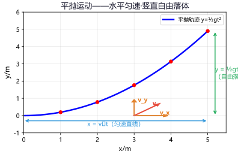
平抛运动：水平匀速 + 竖直自由落体
水平：x = v₀t，vₓ = v₀（匀速） 竖直：y = ½gt²，vᵧ = gt（自由落体）
合速度：v = √(v₀² + (gt)²)，方向 tanθ = gt/v₀
圆周运动：向心力 F = mv²/r = mω²r
匀速圆周运动：速度大小不变、方向时刻改变，合外力指向圆心
万有引力：F = Gm₁m₂/r² 卫星：GMm/r² = mv²/r → v = √(GM/r)
水平：x = v₀t，vₓ = v₀（匀速） 竖直：y = ½gt²，vᵧ = gt（自由落体）
合速度：v = √(v₀² + (gt)²)，方向 tanθ = gt/v₀
圆周运动：向心力 F = mv²/r = mω²r
匀速圆周运动：速度大小不变、方向时刻改变，合外力指向圆心
万有引力：F = Gm₁m₂/r² 卫星：GMm/r² = mv²/r → v = √(GM/r)
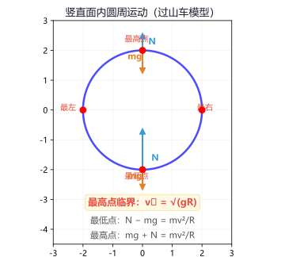
x = v₀t | y = ½gt² | F向 = mv²/r | GMm/r² = mv²/r
例题 6：以 20m/s 水平抛出一物体，求 3s 末的速度大小和方向（g=10m/s²）。
解：vₓ=20m/s，vᵧ=gt=30m/s
v=√(20²+30²)=√1300≈36.1m/s；tanθ=30/20=1.5 → θ≈56.3°
解：vₓ=20m/s，vᵧ=gt=30m/s
v=√(20²+30²)=√1300≈36.1m/s；tanθ=30/20=1.5 → θ≈56.3°
平抛运动是水平匀速与竖直自由落体的合运动。合速度用勾股定理求，方向用正切表示。
练习 6：物体以 10m/s 水平抛出，2s 后下落高度和水平位移各是多少？（g=10m/s²）
y=½gt²=½×10×4=20m；x=v₀t=10×2=20m
二、电学模型
🔹 电路识别模型

串并联识别法：电流路径法（唯一路径→串联，分支→并联）；节点法（用电器两端直接接电源→并联）
电流表：串联接入，正进负出，不能直接接电源
电压表：并联接入，正进负出，可以直接测电源电压
滑动变阻器："一上一下"接入，闭合开关前调到最大阻值
电流表：串联接入，正进负出，不能直接接电源
电压表：并联接入，正进负出，可以直接测电源电压
滑动变阻器："一上一下"接入，闭合开关前调到最大阻值
| 规律 | 串联 | 并联 |
|---|---|---|
| 电流 | I=I₁=I₂ | I=I₁+I₂ |
| 电压 | U=U₁+U₂ | U=U₁=U₂ |
| 电阻 | R=R₁+R₂ | R=(R₁R₂)/(R₁+R₂) |
| 分压分流 | U₁/U₂=R₁/R₂ | I₁/I₂=R₂/R₁ |
🔹 欧姆定律模型

I = U/R（电流与电压成正比，与电阻成反比）
I-U图像：定值电阻→过原点直线；小灯泡→曲线（灯丝电阻随温度升高而增大）
串联分压：U₁/U₂ = R₁/R₂（电阻越大分压越多）
并联分流：I₁/I₂ = R₂/R₁（电阻越大分流越少）
动态电路分析：滑变电阻变化→总电阻变化→总电流变化→各元件电流电压变化
I-U图像：定值电阻→过原点直线；小灯泡→曲线（灯丝电阻随温度升高而增大）
串联分压：U₁/U₂ = R₁/R₂（电阻越大分压越多）
并联分流：I₁/I₂ = R₂/R₁（电阻越大分流越少）
动态电路分析：滑变电阻变化→总电阻变化→总电流变化→各元件电流电压变化
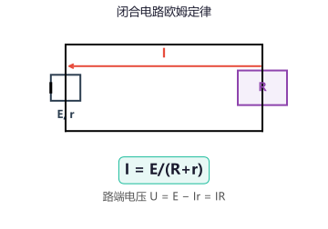
I = U/R | R = U/I（计算式，R与UI无关）
例题 7：R₁=10Ω、R₂=20Ω 串联在 6V 电源上，求：(1)总电阻 (2)电流 (3)R₁两端电压
解：R=R₁+R₂=30Ω；I=U/R=6/30=0.2A；U₁=IR₁=0.2×10=2V
解：R=R₁+R₂=30Ω；I=U/R=6/30=0.2A；U₁=IR₁=0.2×10=2V
串联分压：U₁/U₂=R₁/R₂=1/2，U₁=2V，U₂=4V。
练习 7：R₁=6Ω、R₂=12Ω 并联在 12V 电源上，求干路电流。
I₁=12/6=2A，I₂=12/12=1A，I=I₁+I₂=3A。或 R=6×12/(6+12)=4Ω，I=12/4=3A。
🔹 电功率模型

基本公式：P=W/t=UI=I²R=U²/R
电功：W=UIt=Pt | 1度 = 1kW·h = 3.6×10⁶J
额定vs实际：灯泡亮度取决于实际功率 U实=U额 → P实=P额（正常发光） U实>U额 → 灯很亮（可能烧坏） U实<U额 → 灯较暗
比例计算：串联时P₁/P₂=R₁/R₂；并联时P₁/P₂=R₂/R₁
动态电路极值：滑变阻值最小时电流最大、总功率最大；最大时电流最小、总功率最小
电功：W=UIt=Pt | 1度 = 1kW·h = 3.6×10⁶J
额定vs实际：灯泡亮度取决于实际功率 U实=U额 → P实=P额（正常发光） U实>U额 → 灯很亮（可能烧坏） U实<U额 → 灯较暗
比例计算：串联时P₁/P₂=R₁/R₂；并联时P₁/P₂=R₂/R₁
动态电路极值：滑变阻值最小时电流最大、总功率最大；最大时电流最小、总功率最小
P = UI = I²R = U²/R | 灯泡亮度看实际功率
例题 8：标有"6V 3W"的灯泡接在 3V 电源上，实际功率是多少？
解：R=U额²/P额=36/3=12Ω；P实=U实²/R=9/12=0.75W
解：R=U额²/P额=36/3=12Ω；P实=U实²/R=9/12=0.75W
灯丝电阻不变（忽略温度影响），用额定值算电阻，再用实际电压算实际功率。
练习 8："220V 100W"的灯泡正常工作时的电流和电阻各是多少？
I=P/U=100/220≈0.455A；R=U²/P=48400/100=484Ω
🔹 电路故障分析模型
| 故障现象 | 故障原因 | 判断方法 |
|---|---|---|
| 灯不亮，IA=0 | 断路 | UV=电源电压→所测部分断路 |
| 灯不亮，IA>0 | 短路 | UV=0→所测部分短路 |
| 串联一灯亮一灯不亮 | 不亮灯短路 | 电流有通路 |
| IA过大，烧保险 | 短路或超负荷 | 总电阻过小/总功率过大 |
| 滑变调不动 | 接成两上/两下 | 两上=0，两下=最大不动 |
断路：IA=0，UV≈电源电压 | 短路：IA>0，UV=0
例题 9：串联电路中，闭合开关后一盏灯亮一盏灯不亮，电流表有示数，不亮的灯可能发生了什么故障？
分析：电流表有示数→电路不是断路。串联一灯亮一灯不亮→不亮的灯被短路。
分析：电流表有示数→电路不是断路。串联一灯亮一灯不亮→不亮的灯被短路。
串联电路电流相同，有示数说明电路通路。不亮的灯两端被导线直接连接（短路），电流从导线绕过灯泡。
练习 9：闭合开关后灯泡都不亮，电流表无示数，电压表有示数且接近电源电压，故障是什么？
电压表所测部分（可能是灯泡或某段电路）断路。电压表有示数说明电压表与电源构成通路，所测部分断开。
三、热学模型
🔹 分子动理论与物态变化
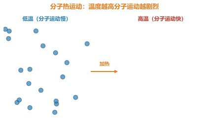
分子动理论：①物质由大量分子组成 ②分子永不停息做无规则运动 ③分子间存在引力和斥力
扩散现象：不同物质相互接触时彼此进入对方（温度越高扩散越快）
六种物态变化： 熔化 固→液（吸热） 凝固 液→固（放热） 汽化 液→气（吸热） 液化 气→液（放热） 升华 固→气（吸热） 凝华 气→固（放热）
扩散现象：不同物质相互接触时彼此进入对方（温度越高扩散越快）
六种物态变化： 熔化 固→液（吸热） 凝固 液→固（放热） 汽化 液→气（吸热） 液化 气→液（放热） 升华 固→气（吸热） 凝华 气→固（放热）
🔹 比热容与热传递
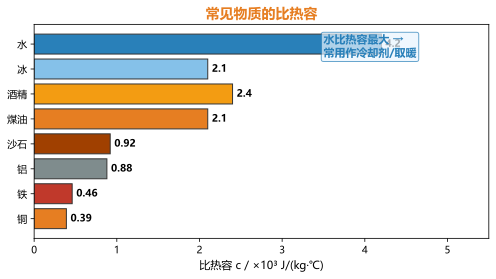
比热容：单位质量的物质温度升高1℃所吸收的热量。
Q = cmΔt c水 = 4.2×10³ J/(kg·℃)
水的比热容最大 → 常用作冷却剂、取暖介质
热传递条件：存在温度差（高温→低温传递热量）
晶体熔化特点：吸热温度不变（有固定熔点）
水沸腾特点：吸热温度不变（保持沸点），气压越高沸点越高
Q = cmΔt c水 = 4.2×10³ J/(kg·℃)
水的比热容最大 → 常用作冷却剂、取暖介质
热传递条件：存在温度差（高温→低温传递热量）
晶体熔化特点：吸热温度不变（有固定熔点）
水沸腾特点：吸热温度不变（保持沸点），气压越高沸点越高
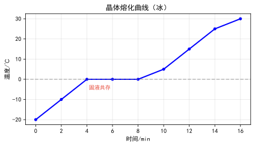
Q = cmΔt | c水 = 4.2×10³ J/(kg·℃) | Q放 = Q吸（热平衡）
例题 10：将 2kg 水从 20℃加热到 100℃，需要吸收多少热量？（c水=4.2×10³J/(kg·℃)）
解：Q=cmΔt=4.2×10³×2×(100−20)=4.2×10³×2×80=6.72×10⁵J
解：Q=cmΔt=4.2×10³×2×(100−20)=4.2×10³×2×80=6.72×10⁵J
注意Δt是温度变化量，用末温减初温。水的比热容很大，常见题型会结合电热器或燃料燃烧一起考。
练习 10：0.5kg 的铁块温度从 80℃降到 30℃放出了多少热量？（c铁=0.46×10³J/(kg·℃)）
Q=cmΔt=0.46×10³×0.5×(80−30)=0.46×10³×0.5×50=1.15×10⁴J
🔹 热机与效率
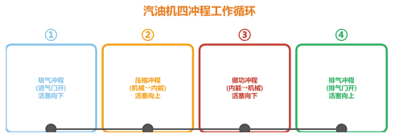
热机四冲程：吸气→压缩(机械能→内能)→做功(内能→机械能)→排气
做功冲程：内能→机械能（提供动力）
压缩冲程：机械能→内能（温度升高）
燃料热值：Q=mq（q为热值，单位J/kg）
热机效率：η = W有/Q放 × 100%
提高效率途径：使燃料充分燃烧、减小摩擦、利用废气余热
做功冲程：内能→机械能（提供动力）
压缩冲程：机械能→内能（温度升高）
燃料热值：Q=mq（q为热值，单位J/kg）
热机效率：η = W有/Q放 × 100%
提高效率途径：使燃料充分燃烧、减小摩擦、利用废气余热
Q = mq | η = W有/Q放 | 热机效率 < 100%
例题 11：汽油机飞轮转速 3600r/min，求每秒做功次数。
解：每秒飞轮转 3600/60=60 转；每 2 转做功 1 次 → 每秒做功 30 次。
解：每秒飞轮转 3600/60=60 转；每 2 转做功 1 次 → 每秒做功 30 次。
四冲程汽油机每 2 转完成 1 个工作循环、做功 1 次。飞轮转速与做功次数的关系是常考知识点。
练习 11：完全燃烧 2kg 无烟煤放出的热量是多少？（q煤=3.4×10⁷J/kg）
Q=mq=2×3.4×10⁷=6.8×10⁷J
四、光学模型
🔹 光的反射与平面镜成像

反射定律：三线共面、两线分居、两角相等（入射角=反射角）
镜面反射：平行光射到光滑表面→反射光平行（能看到清晰的像）
漫反射：平行光射到粗糙表面→反射光射向各个方向（能看见不发光的物体）
平面镜成像： 等大、等距、正立、虚像 — 对称作图
关键：像与物关于镜面对称，像距=物距
镜面反射：平行光射到光滑表面→反射光平行（能看到清晰的像）
漫反射：平行光射到粗糙表面→反射光射向各个方向（能看见不发光的物体）
平面镜成像： 等大、等距、正立、虚像 — 对称作图
关键：像与物关于镜面对称，像距=物距

入射角 = 反射角 | 像距 = 物距 | 像物等大
🔹 光的折射与透镜成像

折射规律：空气→水/玻璃：折射角<入射角
光从空气进入透明介质折射角变小
凸透镜成像（重要！）： u>2f 倒立缩小实像（照相机） u=2f 倒立等大实像（测焦距） f<u<2f 倒立放大实像（投影仪） u<f 正立放大虚像（放大镜）
口诀："物近像远像变大，一倍焦距分虚实，二倍焦距分大小"
光从空气进入透明介质折射角变小
凸透镜成像（重要！）： u>2f 倒立缩小实像（照相机） u=2f 倒立等大实像（测焦距） f<u<2f 倒立放大实像（投影仪） u<f 正立放大虚像（放大镜）
口诀："物近像远像变大，一倍焦距分虚实，二倍焦距分大小"

1/u + 1/v = 1/f | 放大率 m = |v/u|
例题 12：凸透镜焦距 10cm，物体在 25cm 处，求像距和像的性质。
解：u=25cm>2f=20cm，成倒立缩小实像。
1/v = 1/f − 1/u = 1/10 − 1/25 = 0.1−0.04=0.06 → v≈16.7cm
解：u=25cm>2f=20cm，成倒立缩小实像。
1/v = 1/f − 1/u = 1/10 − 1/25 = 0.1−0.04=0.06 → v≈16.7cm
u>2f 成倒立缩小实像（照相机原理）。也可直接用成像公式计算像距。
练习 12：凸透镜焦距 10cm，物体放在 8cm 处，成什么像？
u=8cm<f=10cm，成正立放大虚像（放大镜原理）。像在物体同侧，不能用光屏承接。
🔹 光的色散与视觉

光的色散：白光通过三棱镜分解为红橙黄绿蓝靛紫七色光（牛顿发现）
红光折射率最小，偏折最小 紫光折射率最大，偏折最大
物体的颜色： 不透明物体：反射什么颜色就显什么颜色 透明物体：透过什么颜色就显什么颜色
红外线：热作用强（遥控器、热成像仪）
紫外线：使荧光物质发光（验钞机、杀菌消毒）
红光折射率最小，偏折最小 紫光折射率最大，偏折最大
物体的颜色： 不透明物体：反射什么颜色就显什么颜色 透明物体：透过什么颜色就显什么颜色
红外线：热作用强（遥控器、热成像仪）
紫外线：使荧光物质发光（验钞机、杀菌消毒）
例题 13：在"探究凸透镜成像规律"实验中，光屏上成清晰缩小的像，若将蜡烛和光屏位置互换，还能成清晰的像吗？
分析：光屏上成清晰缩小的像 → u>2f，f<v<2f
互换后新 u'=v（在f与2f之间），新 v'=u>2f → 成倒立放大的实像。
分析：光屏上成清晰缩小的像 → u>2f，f<v<2f
互换后新 u'=v（在f与2f之间），新 v'=u>2f → 成倒立放大的实像。
光路可逆原理：互换后成倒立放大的实像。这是凸透镜实验常考题型。
练习 13：矫正近视眼应佩戴什么透镜？矫正远视眼呢？
近视眼：晶状体太厚（或眼球前后径过长），像成在视网膜前 → 佩戴凹透镜矫正。
远视眼（老花眼）：晶状体太薄，像成在视网膜后 → 佩戴凸透镜矫正。
远视眼（老花眼）：晶状体太薄，像成在视网膜后 → 佩戴凸透镜矫正。
五、电磁模型
🔹 磁场与电流磁效应

磁体：有 N/S 两极，同名相斥异名相吸
奥斯特实验：通电导体周围有磁场（电生磁）→ 电流方向决定磁场方向
安培定则：右手握螺线管，四指指电流方向，拇指指N极
电磁铁：磁性强弱与电流大小和线圈匝数有关
应用：电磁起重机、电磁继电器、电铃
奥斯特实验：通电导体周围有磁场（电生磁）→ 电流方向决定磁场方向
安培定则：右手握螺线管，四指指电流方向，拇指指N极
电磁铁：磁性强弱与电流大小和线圈匝数有关
应用：电磁起重机、电磁继电器、电铃
🔹 电动机与发电机
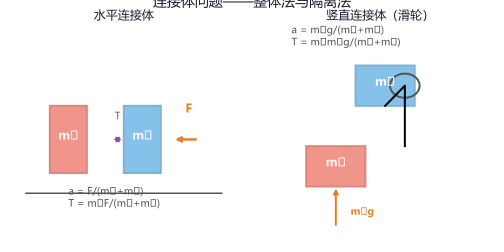
电动机（通电受力）：通电线圈在磁场中受力转动 → 电能→机械能
换向器：改变线圈中电流方向，使线圈持续转动
发电机（电磁感应）：闭合线圈在磁场中切割磁感线产生感应电流 → 机械能→电能
法拉第发现：产生感应电流的条件：①闭合电路 ②导体做切割磁感线运动
交流电：线圈转一圈电流方向改变两次（周期T、频率f=1/T）
换向器：改变线圈中电流方向，使线圈持续转动
发电机（电磁感应）：闭合线圈在磁场中切割磁感线产生感应电流 → 机械能→电能
法拉第发现：产生感应电流的条件：①闭合电路 ②导体做切割磁感线运动
交流电：线圈转一圈电流方向改变两次（周期T、频率f=1/T）
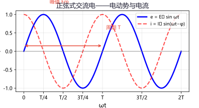
电动机：电能→机械能 | 发电机：机械能→电能 | 电磁感应：磁→电
例题 14：如图所示，闭合电路的一部分导体在磁场中向右运动时，电流计指针偏转。若导体向左运动，指针偏转方向如何？若将磁极对调，导体向右运动呢？
分析：感应电流方向与导体运动方向和磁场方向有关。
①向左运动→偏转方向相反 ②磁极对调+向右→偏转方向与原来相同
分析：感应电流方向与导体运动方向和磁场方向有关。
①向左运动→偏转方向相反 ②磁极对调+向右→偏转方向与原来相同
产生感应电流的条件：闭合电路+切割磁感线。方向由右手定则判定：磁感线穿掌心、拇指指运动方向、四指指电流方向。
练习 14：发电机和电动机分别利用了什么物理原理？能量如何转化？
发电机：电磁感应（法拉第发现），机械能→电能。
电动机：通电导体在磁场中受力，电能→机械能。
电动机：通电导体在磁场中受力，电能→机械能。
🔹 变压器与电能输送
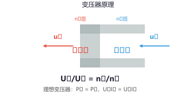
变压器原理：电磁感应（互感现象）
电压关系：U₁/U₂ = n₁/n₂（匝数比等于电压比）
电流关系：I₁/I₂ = n₂/n₁（理想变压器，忽略损耗）
功率关系：P₁ = P₂（理想变压器无能量损失）
升压变压器：n₁ < n₂ → U₂ > U₁（用于远距离输电）
降压变压器：n₁ > n₂ → U₂ < U₁（用于用户端）
远距离输电：升压→减小电流→减小线路损耗（P损=I²R）
电压关系：U₁/U₂ = n₁/n₂（匝数比等于电压比）
电流关系：I₁/I₂ = n₂/n₁（理想变压器，忽略损耗）
功率关系：P₁ = P₂（理想变压器无能量损失）
升压变压器：n₁ < n₂ → U₂ > U₁（用于远距离输电）
降压变压器：n₁ > n₂ → U₂ < U₁（用于用户端）
远距离输电：升压→减小电流→减小线路损耗（P损=I²R）
U₁/U₂ = n₁/n₂ | P₁ = P₂ | P损 = I²R
例题 15：发电站输出电压 1000V，通过变压器升到 100kV 传输，输送功率 1000kW，求升压前后输电电流之比。
解：P=UI，P不变
升压前：I₁=P/U₁=1000kW/1000V=1000A
升压后：I₂=P/U₂=1000kW/100kV=10A
电流比 I₁:I₂=100:1 → 线路损耗降为原来的 1/10000
解：P=UI，P不变
升压前：I₁=P/U₁=1000kW/1000V=1000A
升压后：I₂=P/U₂=1000kW/100kV=10A
电流比 I₁:I₂=100:1 → 线路损耗降为原来的 1/10000
升压到 100 倍，电流降为 1/100。P损=I²R，所以损耗降为原来的 1/10000！这就是为什么要高压输电。
练习 15：理想变压器原线圈 n₁=1000 匝，副线圈 n₂=100 匝，输入电压 U₁=220V，求输出电压 U₂。
U₁/U₂=n₁/n₂ → 220/U₂=1000/100 → U₂=220×100/1000=22V（降压变压器）
六、实验模型
🔹 力学实验——探究杠杆平衡条件
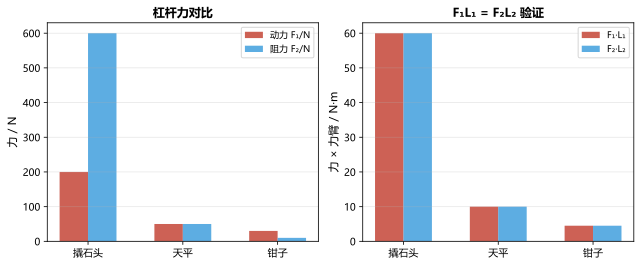
实验目的：探究杠杆平衡时动力×动力臂 = 阻力×阻力臂
实验步骤：
①调节杠杆两端的平衡螺母，使杠杆在水平位置平衡（消除杠杆自重影响）
②在杠杆两侧挂不同数量的钩码，移动钩码位置使杠杆重新水平平衡
③记录动力F₁、动力臂L₁、阻力F₂、阻力臂L₂
④改变力和力臂，重复实验
注意事项： 水平平衡目的：方便直接读出力臂（从支点到钩码悬挂点的距离） 每次实验前要调平 多次实验避免偶然性
实验步骤：
①调节杠杆两端的平衡螺母，使杠杆在水平位置平衡（消除杠杆自重影响）
②在杠杆两侧挂不同数量的钩码，移动钩码位置使杠杆重新水平平衡
③记录动力F₁、动力臂L₁、阻力F₂、阻力臂L₂
④改变力和力臂，重复实验
注意事项： 水平平衡目的：方便直接读出力臂（从支点到钩码悬挂点的距离） 每次实验前要调平 多次实验避免偶然性
F₁L₁ = F₂L₂ | 杠杆平衡条件
例题 16：在杠杆两端各挂一个钩码（每个 0.5N），左端 3 个在 2 格处，右端 2 个在 3 格处，杠杆能平衡吗？
解：F₁=1.5N、L₁=2 格 → F₁L₁=3
F₂=1.0N、L₂=3 格 → F₂L₂=3
F₁L₁=F₂L₂ → 平衡
解：F₁=1.5N、L₁=2 格 → F₁L₁=3
F₂=1.0N、L₂=3 格 → F₂L₂=3
F₁L₁=F₂L₂ → 平衡
杠杆平衡条件不关心力的单位、力臂的具体数值，只关心乘积相等。钩码数量×格数相等即可。
练习 16：某同学测出了一组数据 F₁L₁≠F₂L₂，可能的原因是什么？
可能原因：①杠杆未在水平位置平衡就读数 ②力臂测量错误（不是从支点到力的作用线的距离）③杠杆自重未消除（未调平）
🔹 光学实验——凸透镜成像规律
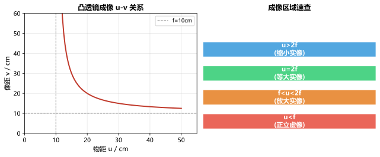
实验器材：光具座、凸透镜、蜡烛、光屏、刻度尺
实验步骤：
①将凸透镜放在光具座中间，在透镜左侧放蜡烛、右侧放光屏
②调整蜡烛、透镜、光屏三者中心在同一高度（使像成在光屏中央）
③移动蜡烛改变物距，移动光屏直到光屏上出现清晰的像
④记录物距u、像距v、像的性质（大小、正倒、虚实）
注意事项： 三心等高：烛焰中心、透镜中心、光屏中心在同一高度 光屏上找不到像：可能是物距小于或等于焦距（成虚像或不成像） 换用不同焦距的透镜：观察成像规律的变化
实验步骤：
①将凸透镜放在光具座中间，在透镜左侧放蜡烛、右侧放光屏
②调整蜡烛、透镜、光屏三者中心在同一高度（使像成在光屏中央）
③移动蜡烛改变物距，移动光屏直到光屏上出现清晰的像
④记录物距u、像距v、像的性质（大小、正倒、虚实）
注意事项： 三心等高：烛焰中心、透镜中心、光屏中心在同一高度 光屏上找不到像：可能是物距小于或等于焦距（成虚像或不成像） 换用不同焦距的透镜：观察成像规律的变化
例题 17：在凸透镜成像实验中，当蜡烛从远处向透镜靠近时，光屏上的像如何变化？
分析：根据"物近像远像变大"的规律：
①u>2f：缩小→等大→放大（物距减小像距增大）
②u=f：不成像（平行光线）
③u<f：成虚像（光屏上无法承接）
分析：根据"物近像远像变大"的规律：
①u>2f：缩小→等大→放大（物距减小像距增大）
②u=f：不成像（平行光线）
③u<f：成虚像（光屏上无法承接）
口诀"物近像远像变大"全程适用。当物距等于焦距时不成像（射出平行光）。
练习 17：实验时烛焰的像成在光屏上方，应如何调节才能让像在光屏中央？
像在光屏上方，说明烛焰中心低于透镜中心。应将蜡烛向上调（或将光屏向上调、或将透镜向下调），使三心等高。
🔹 电学实验——伏安法测电阻

实验原理：R = U/I（伏安法）
电路连接： 电流表串联 电压表并联 滑动变阻器"一上一下"
实验步骤：
①按电路图连接实物，开关断开，滑变调到最大阻值
②闭合开关，移动滑片，记录多组U、I值
③计算R=U/I，取平均值减小误差
小灯泡电阻：灯丝电阻随温度升高而增大，不能取平均值
连接注意事项：开关要断开、滑变调最大、电流表电压表量程要合适、正进负出
电路连接： 电流表串联 电压表并联 滑动变阻器"一上一下"
实验步骤：
①按电路图连接实物，开关断开，滑变调到最大阻值
②闭合开关，移动滑片，记录多组U、I值
③计算R=U/I，取平均值减小误差
小灯泡电阻：灯丝电阻随温度升高而增大，不能取平均值
连接注意事项：开关要断开、滑变调最大、电流表电压表量程要合适、正进负出
R = U/I | 定值电阻：多次测量取平均 | 小灯泡：R随温度升高增大
例题 18：伏安法测电阻时，若电压表有示数、电流表无示数，故障是什么？
分析：电压表有示数→电压表与电源构成通路；电流表无示数→电路不通。
结论：被测电阻断路（电压表测的是电源电压）
分析：电压表有示数→电压表与电源构成通路；电流表无示数→电路不通。
结论：被测电阻断路（电压表测的是电源电压）
这是伏安法测电阻的典型故障——待测电阻断路。此时电压表示数≈电源电压，电流表示数为0。
练习 18：某同学测小灯泡电阻时发现电流表有示数但灯泡不亮，可能的原因是什么？
①滑动变阻器接入阻值太大→电流太小，灯泡实际功率太小不发光 ②灯泡短路（电流表有示数但灯不亮）